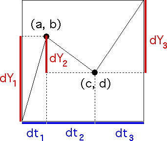

| The generator has turning points
(0.2, 0.7) and (0.6, 0.4), so the
price and
clock time increments |
| dY1 = 0.7 - 0 = 0.7, |
dt1 = 0.2 - 0 = 0.2 |
| dY2 = 0.4 - 0.7 = -0.3, |
dt2 = 0.6 - 0.2 = 0.4 |
| dY3 = 1 - 0.4 = 0.6, |
dt3 = 1 - 0.6 = 0.4. |
|
|  |
| It is easy to see this is not
a unifractal generator: compute Hi =
Log|dYi|/Log(dti). We obtain |
| H1 = Log(0.7)/Log(0.2) = 0.221615, |
| H2 = Log(0.3)/Log(0.4) = 1.31396, and |
| H3 = Log(0.6)/Log(0.4) = 0.557493. |
|